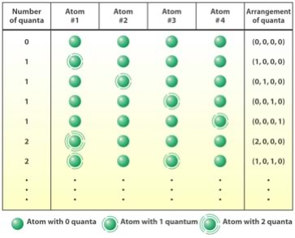

| Chapter 5.5: Thermodynamics and systems |
The study of how energy in its various forms moves through a system is called thermodynamics, and in chemistry specifically - thermochemistry. The First Law of Thermodynamics tells us that energy can be neither created nor destroyed, but it can be transferred from a system to its surroundings and vice versa. For any system, if we add up the kinetic and potential energies of all of the particles that make up the substance we get the total energy – this is called the system’s internal energy, E. It turns out that it is not really possible to measure the total internal energy of a system - but what can be measured and calculated is the change in internal energy ΔE (the Greek letter Δ stands for “change in”). There are two ways that the internal energy of a system can change - we can change the total amount of thermal energy in the system (denoted “q”) or the system can do work, or have work done to it (work is denoted “w”). The change in internal energy ΔE is therefore q +w. |
5.1 Systems |
Since we cannot measure energy changes directly, we have to use some observable (and measurable) change in the system. Typically we measure the temperature change and then relate it to the energy change. For changes that occur at constant pressure and volume this energy change is the enthalpy change ΔH. If we know the temperature change (ΔT), the amount (mass) of material and its specific heat, we can calculate the enthalpy change (J) = mass (g) x specific heat (J/ g ºC) x ΔT (ºC). When considering the enthalpy change for a process, the direction of energy transfer is important. By convention if thermal energy goes out of the system to the surroundings (that is, the surroundings increase in temperature) the sign of ΔH is negative and we say the process is exothermic (literally heat out). Combustion reactions, such as burning wood or gasoline, are probably the most common examples of exothermic processes. In contrast if a process requires thermal energy from the surroundings to make it happen, that is: energy is transferred from the surroundings to the system, the sign of ΔH is positive and we say the process is endothermic. |
Question to answer:
Questions to ponder and questions for later:
|
While the First Law of Thermodynamics states that you can not get more energy out of a system than is already present in some form, the Second Law of Thermodynamics tells us that we cannot even get back the energy that we use to bring about a change in a system. This idea is captured by the phrase, for any change in a system, the total entropy of the universe must increase. As we will see, this means that some of the energy is changed into a form that can no longer do work. Probability and Entropy Before we look at entropy in detail, let us remind ourselves about probability. Let us look at a few systems and think about what is more probable. For example: if you take a deck of cards and shuffle it, which is more probable - that the cards will shuffle into the order ace, king, queen, jack, 10, 9 … etc for each suite - or that they will end up in some random jumbled order? Of course the answer is obvious: the random order is much more probable since there are many sequences of cards that “count” as random order, but only one that is “ordered”. This is true even though whatever order the shuffled cards actually assume is, itself, just as unlikely as the perfectly ordered one. But because we “care” about a particular order, we place all other possible orders of the cards together - we do not distinguish between them. We can calculate, mathematically, the probability of the result we care about. To determine the probability of an event (for example, a particular order of cards), we divide the number of outcomes cared about by the total number of possible outcomes. For 52 cards there are 52! (factorial)(52 x 51 x 50 x 49 ….) ways that the cards can be arranged [link]; this number is approximately 8.07 x 1067, a number on the same order of magnitude as the number of atoms in our galaxy. So the probability of shuffling cards to produce any one particular order is 1/52! - a very small number indeed (but since it is > 0, this is an event that can happen, and in fact it always happens, since the probability that some arrangement of cards will be occur is 1 - now that is a mind bender, but true nevertheless, highly improbable events occur all the time! [link] So let us return to the idea that the direction of change in a system is determined by probabilities. We will consider the transfer of thermal energy (heat) and see if we can make sense of it. FIrst, remember that energy is quantized. So, for any substance at a particular temperature there will be a certain number of energy quanta. To make things simple(r) we will consider a four atom solid that contains 2 quanta of energy. These quanta can be distributed so that a particular atom can have 0, 1, or 2 quanta of energy. You can now either calculate (or determine by trial and error) the number of different possible arrangements of these quanta (there are 10). Remember that W is the number of distinguishable arrangements, so for this system W = 10 and S = k ln 10. Now what happens if we consider two similar systems, one with 4 quanta and the other with 8 quanta. The system with 4 quanta will be at a lower temperature than the system with 8 quanta. We can also calculate the value of W for the 4 quanta (4 atom) system by considering the maximum number of possible ways to arrange the quanta over the 4 atoms. For the 4 atom 4 quanta system W = 35. If we do the same calculation for the 8 quanta 4 atom system W = 165. If taken together, the total number of arrangements of the two systems considered together is 35 x 165 = 5775. |
The 4 quanta system is at a lower temperature than the 8 quanta system, since the 8 quanta system has more energy. What happens if we put the two systems in contact? Energy will transfer from the hotter (8) to the colder (4) system until the temperatures are equal. At this point, each will have 6 quanta (which corresponds to a W of 84); since there are two systems (each with 6 quanta), the total W for the combined systems is W of 84 x 84 = 7056 states. You will note that 7056 is greater than 5775. [We multiply, rather than add W when we combine systems.] |
 |
Our conclusion, there are more distinguishable arrangements in the two systems after the energy transfer than before - the final system is more probable and so has a higher entropy. Now you might well object - given that we are working with systems of only 4 or 5 atoms each, it is easy to imagine that random fluctuations could lead to the movement of quanta from cold to hot, and that is true - that is why the behavior at the nanoscale is reversible. But when we are talking about macroscopic systems such a possibility quickly becomes increasingly improbable as the number of atoms/molecules increases. Remember a very small drop of water, weight 0.05 grams, contains approximately 1.8 x 1021 molecules (perhaps you can also calculate the volume of such a drop). What is reversible at the nanoscale is irreversible at the macroscopic scale – yet another wacky and (perhaps) counter-intuitive fact. The realization that change is driven simply by the move to more probable states is, for some, quite difficult to accept, but it is true even when we consider living systems (when considered in the context of their surroundings). |
It is generally true that we are driven to seek a purpose for why things happen, and in the grand scheme of things, the idea that the overarching principle of change in the universe is towards more probable states can be difficult to accept [link]. |
5.1
Systems |
Question to answer:
Questions to ponder and questions for later:
|
| 28-Jun-2012 |